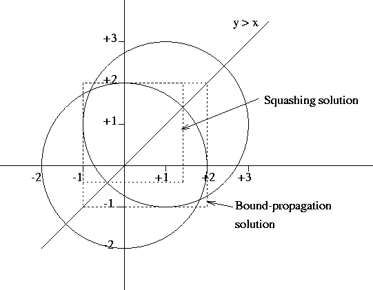

Next: General Guidelines for the
Up: IC: A Hybrid Finite
Previous: Introduction
Index
Subsections
- Vars :: Domain
- Constrains Vars to take only integer or real values from the domain
specified by Domain. Vars may be a variable, a list, or a submatrix (e.g. M[1..4, 3..6]); for a list or a submatrix, the domain is applied recursively
so that one can apply a domain to, for instance, a list of lists of
variables. Domain can be specified as a simple range Lo .. Hi, or as a list
of subranges and/or individual elements (integer variables only). The type
of the bounds determines the type of the variable (real or integer). Also
allowed are the (untyped) symbolic bound values inf, +inf and
-inf.
- ::(Vars,Domain,Bool)
Provides a reified form of the ::/2 domain assignment predicate. This
reified ::/3 is defined only to work for one variable and only integer
variables (unlike ::/2), hence only the Domain formats suitable for
integers may be supplied to this predicate.
For a single variable, V, the Bool will be instantiated to 0 if the
current domain of V does not intersect with Domain. It will be
instantiated to 1 iff the domain of V is wholly contained within
Domain. Finally the Boolean will remain an integer variable in the
range 0..1 if neither of the above two conditions hold.
Instantiating Bool to 1, will cause the constraint to behave exactly
like ::/2. Instantiating Bool to 0 will cause Domain to be
excluded from the domain of all the variables in Vars where such an
exclusion is representable. If such an integer domain is
unrepresentable (e.g. -1.0Inf .. -5, 5..1.0Inf), then a delayed
goal will be setup to exclude values when the bounds become
sufficiently narrow.
Note that calling the reified form of :: will result in the
Variable becoming constrained to be integral, even if Bool is
uninstantiated.
Further note that, like other reified predicates, :: can be used
infix in an IC expression e.g. B #= (X :: [1..10]) is equivalent
to ::(X, [1..10], B). See section 3.2.3
for more information of reified constraints.
- Vars #:: Domain
- Constrains Vars to take only integer values from the domain
specified by Domain. Vars may be a variable, a list, or a submatrix (e.g. M[1..4, 3..6]); for a list or a submatrix, the domain is applied recursively
so that one can apply a domain to, for instance, a list of lists of
variables. Domain can be specified as a simple range Lo .. Hi, or as a list
of subranges and/or individual elements (integer variables only). Also
allowed are the (untyped) symbolic bound values inf, +inf and
-inf.
- Vars $:: Domain
- Constrains Vars to take real values from the domain specified by
Domain. Vars may be a variable, a list, or a submatrix (e.g. M[1..4,
3..6]); for a list or a submatrix, the domain is applied recursively
so that one can apply a domain to, for instance, a list of lists of
variables. Domain can only be specified as a simple range Lo .. Hi,
in keeping with other implementations of this generic domain
assignment predicate.
- reals(Vars)
- Declares that the given variables are IC variables.
- integers(Vars)
- Constrains the given variables to take integer values only.
Note that the integer forms of the constraints are essentially the same as
the general forms, except that they check that all constants are integers
and generally constrain all variables and subexpressions to be
integral.
Thus with integer constraints, the solver does very much behave like a
traditional integer solver, with any temporary variables and intermediate
results assumed to be integral.
This means that it makes little sense to use many of the nonlinear functions
available for use in expressions (e.g. sin, cos, ln, exp) in integer
constraints.
It also means that one should take care using such things as division:
X/2 + Y/2 #= 1 and X + Y #= 2 are different
constraints, with the former constraining X and Y to be even.
That said, if all the constants and variables are integral already and the
subexpressions clearly so as a consequence, then the integer (#) constraints
and general ($) constraints may be used integerchangeably.
- ExprX $= ExprY,
ic:(ExprX =:= ExprY)
- ExprX is equal to ExprY. ExprX and ExprY are general expressions.
- ExprX $>= ExprY,
ic:(ExprX >= ExprY)
- ExprX is greater than or equal to ExprY. ExprX and ExprY are general
expressions.
- ExprX $=< ExprY,
ic:(ExprX =< ExprY)
- ExprX is less than or equal to ExprY. ExprX and ExprY are general expressions.
- ExprX $> ExprY,
ic:(ExprX > ExprY)
- ExprX is strictly greater than ExprY. ExprX and ExprY are general
expressions.
- ExprX $< ExprY),
ic:(ExprX < ExprY)
- ExprX is strictly less than ExprY. ExprX and ExprY are general expressions.
- ExprX $
\= ExprY,
ic:(ExprX =\= ExprY)
-
ExprX is not equal to ExprY. ExprX and ExprY are general expressions.
- ExprX #= ExprY
- ExprX is equal to ExprY. ExprX and ExprY are constrained to be integer
expressions.
- ExprX #>= ExprY
- ExprX is greater than or equal to ExprY. ExprX and ExprY are constrained to
be integer expressions.
- ExprX #=< ExprY
- ExprX is less than or equal to ExprY. ExprX and ExprY are constrained to be
integer expressions.
- ExprX #> ExprY
- ExprX is greater than ExprY. ExprX and ExprY are constrained to be integer
expressions.
- ExprX #< ExprY
- ExprX is less than ExprY. ExprX and ExprY are constrained to be integer
expressions.
- ExprX #
\= ExprY
-
ExprX is not equal to ExprY. ExprX and ExprY are constrained to be integer
expressions.
- ac_eq(X, Y, C)
- Arc-consistent implementation of X #= Y + C. X and Y are
constrained to be integer variables and to have ``reasonable'' bounds. C
must be an integer.
The comparison constraints =:=/2, >=/2, =</2 and
=\=/2 have the same syntax as the standard ECLiPSe built-in
comparison operators (and those of other constraint solvers).
Unless explicitly qualified, the ECLiPSe built-ins are used.
To use these constraints without the need to qualify them, use the
alternative dollar-syntax.
Reified constraints
As mentioned earlier, when constraints appear in an expression
context, then they evaluate to their reified truth value. Practically
this means that the constraints are posted in a passive check but
do not propagate mode, whereby no variable domains are modified but
checks are made to see if the constraint has become entailed
(necessarily true) or dis-entailed (necessarily false).
The simplest and arguably most natural way to reify a constraint is to
place it in an expression context (i.e. on either side of a $=,
$>=, #=, etc.) and assign its truth value to a variable.
For example:
TruthValue #= (X $> 4).
It is also possible to use the 3 argument form of the constraint predicates
where the third argument is the reified truth value, for example:
$>(X, 4, TruthValue).
But in general the previous form is recommended as it can be easily
extended to handle the truth values of a combination of constraints, by
using the infix operators and (logical conjunction), or
(logical disjunction) and => (logical implication) or the prefix
operator neg (logical negation). e.g.:
TruthValue #= (X $> 4 and Y $< 6).
Again, as mentioned earlier, there are a number of reified connectives
which can be used to combine reified constraints using logical
operations on their truth values.
- and/2
- Reified constraint conjunction. e.g.
B #= (X $> 3 and X $< 8) or
X $> 3 and X $< 8
- or/2
- Reified constraint disjunction. e.g.
B #= (X $> 3 or X $< 8) or
X $> 3 or X $< 8
- =>/2
- Reified constraint implication. e.g.
B #= (X $> 3 => X $< 8) or
X $> 3 => X $< 8
- neg/1
- Reified constraint negation. e.g.
B #= (neg X $> 3) or
neg X $> 3
The logical truth value of a constraint, when reified, can be used to
enforce the constraint (or its negation) during search.
The following three examples are equivalent:
X $> 4.
B #= (X $> 4), B=1.
B #= (X $=< 4), B=0.
By unifying the value of the reified truth value, the constraint
changes from being passive to being active. Once actively
true (or actively false) the constraint will prune domains as though
it had been posted as a simple non-reified constraint.
Reified constraints are implemented using the the 3 argument form of
the constraint predicate if it exists (and it does exist for the
arithmetic relation constraints).
User-defined constraints will be treated as reifiable if they appear in an
expression context and as such should provide forms where the last argument
is the reified truth value reflected into a variable.
The user-defined constraint should behave as follows depending on the
state of the reified variable.
When the reified variable is
unbound, the constraint should not perform any domain reduction on its
arguments, but should check to see if the constraint has become entailed or
dis-entailed, setting the reified variable to 1 or 0
respectively.
In the event that the reified
variable becomes bound to 0 then the constraint should actively
propagate its negation.
In the event that the reified
variable becomes bound to 1 then the constraint should actively
propagate its normal semantics.
- alldifferent(Vars)
- Constrains all elements of a list to be different from all other
elements of the list.
- element(Index, List, Value)
- Constrains Value to be the Index'th element of the list of integers List.
These predicates can be used to enumerate solutions to a set of constraints
over integer variables. For optimisation, see also the
branch_and_bound library.
- indomain(Var)
- Instantiates an integer IC variable to an element of its domain.
- labeling(Vars)
- Instantiates all IC variables in a list to elements of their domains.
- search(Vars, Arg, Select, Choice, Method, Options)
- Instantiates the variables Vars by performing a search based on the
parameters provided by the user.
These predicates can be used to locate real solutions to a set of
constraints. They are essentially the same as those that were available in
RIA; more details of the algorithms used can be found in
section 3.2.10.
- locate(Vars, Precision)
- Locate solution intervals for Vars by splitting and search. Precision
indicates how accurate the intervals have to be (in absolute or relative
terms) before splitting stops.
- locate(Vars, Precision, LinLog)
- As per locate/2, but LinLog specifies wither linear (lin) or
logarithmic (log) splitting should be used. (locate/2 is
equivalent to calling locate/3 with log as the third
argument.)
- locate(LocateVars, SquashVars, Precision, LinLog)
- As per locate/3, but also applies the squashing algorithm to
SquashVars both before splitting commences, and then again after each split.
- squash(Vars, Precision, LinLog)
- Refine the intervals of Vars by the squashing algorithm.
Variable query predicates
These predicates allow one to retrieve various properties of an IC variable
(and usually work on ground numbers as well).
- is_solver_var(Var)
- Succeeds if an only if Var is an IC variable.
- is_solver_type(Term)
- Succeeds if an only if Term is an IC variable or a number.
- get_solver_type(Var, Type)
- Returns whether Var is an integer variable or a real variable.
- get_bounds(Var, Lo, Hi)
- Returns the current bounds of Var.
- get_min(Var, Lo)
- Returns the current lower bound of Var.
- get_max(Var, Hi)
- Returns the current upper bound of Var.
- get_float_bounds(Var, Lo, Hi)
- Returns the current bounds of Var as floats.
- get_integer_bounds(Var, Lo, Hi)
- Returns the current bounds of the integer variable Var (infinite bounds are
returned as floats). Constrains Var to be integral if it isn't already.
- get_finite_integer_bounds(Var, Lo, Hi)
- Returns the current (finite) bounds of the integer variable Var. Constrains
Var to be finite and integral if it isn't already.
- get_domain_size(Var, Size)
- Returns the number of elements in the IC domain for Var. Currently Var
needs to be of type integer.
- get_domain(Var, Domain)
- Returns a ground representation of the current IC domain for Var.
- get_domain_as_list(Var, Domain)
- Returns a list of all the elements in the IC domain for Var. Currently Var
needs to be of type integer.
- get_median(Var, Median)
- Returns the median of the interval of Var.
- get_delta(Var, Delta)
- Returns the width of the interval of Var.
- is_in_domain(Var, Value)
- Succeeds if and only if Value is contained in the current domain of Var.
- is_in_domain(Var, Value, Result)
- Binds Result to 'yes', 'no' or 'maybe' depending on whether Value is
in the current domain of Var.
- delayed_goals_number(Var, Number)
- Returns the number of delayed goals suspended on the IC attribute. This
approximates the number of IC constraints that Var is involved in.
With interval constraint propagation, it is sometimes useful to limit
propagation for efficiency reasons. In IC, this is controlled by the
propagation threshold. The way it works is that for non-integer variables,
bounds are only changed if the absolute and relative changes of the bound
exceed this threshold (i.e. small changes are suppressed). This means that
constraints over real variables are only guaranteed to be consistent up to
the current threshold (over and above any normal widening which occurs).
Note that a higher threshold speeds up computations, but reduces precision
and may in the extreme case prevent the system from being able to locate
individual solutions.
The default threshold is 1e-8.
- get_threshold(Threshold)
- Returns the current propagation threshold.
- set_threshold(Threshold)
- Sets the propagation threshold. Note that if the threshold is reduced using
this predicate (requiring a higher level of precision), the current state of
the system may not be consistent with respect to the new threshold. If it
is important that the new level of precision be realised for all or part of
the system before computation proceeds, set_threshold/2 should be used
instead.
- set_threshold(Threshold, WakeVars)
- Sets the propagation threshold, with re-computation. If the threshold has
been reduced, all constraints suspended on the bounds of the variables in
the list WakeVars are woken.
Solving by Interval Propagation
Some problems can be solved just by interval propagation, for example:
[eclipse 9]: X :: 0.0..100.0, sqr(X) $= 7-X.
X = X{2.1925824014821353 .. 2.1925824127108307}
Delayed goals:
...
yes.
There are two things to note here:
- The solver never instantiates real variables. They only get
reduced to narrow ranges.
- In general, many delayed goals remain at the end of propagation.
This reflects the fact that the variable's ranges could possibly
be further reduced later on during the computation.
It also reflects he fact that
- the solver does not guarantee the existence of solutions in the
computed ranges. However, it guarantees that there are no solutions
outside these ranges.
Note that, since variables by default range from minus to plus infinity,
we could have written the above example as:
[eclipse 2]: sqr(X) $= 7-X, X $>= 0.
X = X{2.1925824014821353 .. 2.1925824127108307}
Delayed goals:
...
yes.
If too little information is given, the interval propagation may not
be able to infer any interesting bounds:
[eclipse 2]: sqr(X) $= 7-X.
X = X{-1.0Inf .. 7.0}
Delayed goals:
...
yes.
Reducing Ranges Further
There are two methods for further domain reduction. They both rely on
search and splitting the domains. There are 2 parameters to specify how
domains are to be split.
The Precision parameter is used to specify the
minimum required precision, i.e. the maximum size of the resulting
intervals (in either absolute or relative terms).
Note that the
arc-propagation threshold
needs to be one or
several orders of magnitude smaller than precision, otherwise
the solver may not be able to achieve the required precision.
The lin/log parameter guides the way domains are split.
If it is set to lin then the split is in the arithmetic middle.
If it is set to log, the split is such as to have the
same number of floats to either side of the split. This is to take
the logarithmic distribution of the floats into account.
If the ranges of variables at the start of the squashing algorithm are
known not to span several orders of magnitude (
|max| < 10 * |min|) the
somewhat cheaper linear splitting may be used. In general, log splitting
is recommended.
- locate(+Vars, +Precision)
- locate(+Vars, +Precision, +lin/log)
-
Locate solution intervals for the given variables with the required
precision. This works well if the problem has a finite number of solutions.
locate/2,3 work by nondeterministically splitting the ranges of the variables
until they are narrower than Precision.
- squash(+Vars, +Precision, +lin/log)
-
Use the
squash algorithm
on these variables.
This is a deterministic reduction of the ranges of variables, done by
searching for domain restrictions which cause failure, and then reducing
the domain to the complement of that which caused the failure.
This algorithm is appropriate when the problem has continuous solution ranges
(where locate would return many adjacent solutions).
- locate(+LocateVars,+SquashVars,+Precision,+lin/log)
-
A variant of locate/2,3 with interleaved squashing:
The
squash algorithm
is applied once to the SquashVars initially,
and then again after each splitting step,
ie. each time one of the LocateVars has been split nondeterministically.
A variable may occur both in LocateVars and SquashVars.
Squash algorithm
A stronger propagation algorithm is also included. This is built upon the
normal bound consistency. It guarantees that, if you take any variable
and restrict its range to a small domain near one of its bounds,
the original bound consistency solver will not find any constraint
unsatisfied.
Figure 3.1:
Propagation with Squash algorithm (example)
|  |
All points (X,Y) Y >= X, lying within the intersection of 2 circles with
radius 2, one centred at (0,0) the other at (1,1).
[eclipse 2]: 4 $>= X^2 + Y^2, 4 $>= (X-1)^2+(Y-1)^2, Y $>= X.
Y = Y{-1.0000000000000004 .. 2.0000000000000004}
X = X{-1.0000000000000004 .. 2.0000000000000004}
Delayed goals:
...
yes.
The bound-consistency solution does not take into account the X >= Y
constraint. Intuitively this is because it passes through the corners
of the box denoting the solution to the problem of simply intersecting
the two circles.
[eclipse 2]: 4 $>= X^2 + Y^2, 4 $>= (X-1)^2+(Y-1)^2, Y $>= X,
squash([X,Y], 1e-5, lin).
X = X{-1.0000000000000004 .. 1.4142135999632601}
Y = Y{-0.41421359996326 .. 2.0000000000000004}
Delayed goals:
...
yes.
(Using the facilities described in this section requires importing the
ic_kernel module. Also, since
they depend on the internals of the IC library, the details presented here
are subject to change without notice.)
Often it is difficult to know where the solver spends its time.
The library has built-in counters which keep track of the number of times
various events occur:
- ic_lin_create
- The number of linear constraints set up.
- ic_lin_prop
- The number of times a linear constraint is propagated.
- ic_uni_prop/ic_bin_prop/ic_tern_prop
- The number of times a non-linear (unary/binary/ternary) operator is
propagated.
- ic_split
- The number of domain splits in locate/2,3,4.
- ic_squash
- The number of squash attempts in squash/3 or locate/4.
Users who wish to track activity within their own programs may (if they
wish) use the same mechanism. New event types can be registered (see
below) and actions recorded by calling the
ic_event(Event)
predicate.
The counters are controlled using the primitives:
- ic_stat(on)
- ic_stat(off)
- Enables/disable collection of statistics. Default is off.
- ic_stat(reset)
- Reset statistics counters.
- ic_stat(print)
- Print statistics counters to the standard output stream.
- ic_stat_get(-Stat)
- Returns a list of CounterName=CounterValue pairs, summarising the
computation since the last reset.
- ic_event(+Name)
- Records the fact that the named event has happened.
- ic_stat_register_event(+Name,+Description)
- Registers a new event type and sets the counter to 0. This allows
user-defined predicates to record their own events within the same
framework.
Next: General Guidelines for the
Up: IC: A Hybrid Finite
Previous: Introduction
Index
Warwick Harvey
2005-01-25